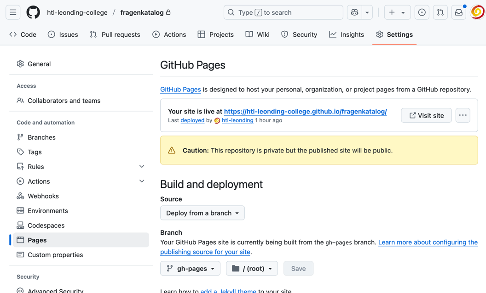

1. Git
1.1. git Architektur und Kommandos Foundation
-
Skizzieren Sie die Architektur von git und erklären Sie die wichtigsten Kommandos.
Lösung
1.2. Erstellung eines Repositories Foundation
-
Wie kann ich ein neues Repository lokal erstellen?
Lösung
git init1.3. Den vorletzten Commit aus-checken Foundation
-
Wie kann man aus einem git-repo einen Commit auschecken, der nicht der letzte ist? Geben Sie die genauen Befehle an.
Lösung
git checkout <Commit-Hash>oder
git checkout HEAD~1HEAD zeigt auf den aktuellsten Commit. |
HEAD~1 ist der eine Commit davor, also der vorletzte (ident mit HEAD^). |
HEAD~2 wäre der drittletzte, usw. |
HEAD^ Der Vorgänger (also ein Commit zurück). HEAD^ wird verwendet, wenn es mehrere Vorgänger gibt, zB bei einem Merge-Commit → HEAD^1 ist der erste Vorgänger, HEAD^2 der zweite Vorgänger. |
1.4. git in Teams Foundation
-
Welcher Befehl ist zu Beginn jeder Arbeit und auch zwischendurch mit git notwendig und warum?
Lösung
git pull-
Damit alle Änderungen der anderen Teammitglieder in den eigenen Branch übernommen werden.
1.5. .gitignore Foundation
-
Was bewirkt ein Eintrag in der Datei
.gitignore? Warum ist es wichtig,.gitignorezu verwenden?
Lösung
Ein Eintrag in .gitignore sorgt dafür, dass bestimmte Dateien nicht mit ins Git Repository aufgenommen werden. Das ist wichtig,
-
weil man sonst generierte Dateien oder Dependencies wie
node_moduleshochladen würde, wodurchgit pushundgit pulllangsamer sind. -
Außerdem ist es sicherheitstechnisch verboten, vertrauliche Daten (z.B. in
.envDateien) in einem öffentlichen Repository zu speichern.
| Grundsatz: Dateien, die generiert werden (zB duch kompilieren, durch npm install), sollten nicht im Repository sein. Dateien, die nicht erstellt werden (zB Konfigurationsdateien, Dokumentation, Programmcode) sind im Repository zu speichern. Aber keine privaten Daten wie Passwörter, API-Keys, etc.! |
1.6. ssh in github Foundation
-
Wie kann ich mich mit ssh in github einloggen?
Lösung
-
ssh-key in
~/.sshgenerierenssh-keygen -t ed25519 -
folgendes in
~/.ssh/configeinfügen:Host github.com AddKeysToAgent yes UseKeychain yes IdentityFile ~/.ssh/id_ed25519 -
public-key in Developer-Settings in github einfügen
gh-profile → Settings → SSH and GPG keys → New SSH key
1.7. git pull vs git fetch Advanced
-
Was ist der Unterschied zwischen
git pullundgit fetch?
Lösung
git pull ist eine Kombination aus git fetch und git merge. Es lädt die neuesten Änderungen vom Remote-Repository herunter und integriert sie in den aktuellen Branch. git fetch hingegen lädt nur die Änderungen herunter, ohne sie zu integrieren. Dies ermöglicht es Ihnen, die Änderungen zu überprüfen, bevor Sie sie in Ihren Branch übernehmen.
1.8. Cherry Picking Foundation
-
Erläutern Sie Cherry Picking und geben Sie ein konkretes Bsp. mit den git-cli-Kommandos an.
Lösung
Cherry Picking bedeutet, einzelne Commits aus einem Branch (z.B. Feature-Branch) in den derzeitigen (z.B. Main-Branch) zu übernehmen, ohne den ganzen Feature-Branch zu mergen. Dabei wird der ausgewählte Commit auf den aktuellen Branch übernommen, und der HEAD zeigt anschließend auf den neuen Commit. Man verwendet es z.B. wenn man im Feature-Branch einen Bug gefixt hat, aber das Feature noch nicht fertig ist.
git cherry-pick <Commit-Hash>1.9. gh-pages aktivieren Foundation
-
Wie kann man für ein repo gh-pages aktivieren?
Lösung
-
Erstelle einen Branch
gh-pagesund pushe ihn auf GitHub. -
Gehe zu den Einstellungen (Settings) des Repositories auf GitHub.
-
Settings - Pages - Deploy from a branch - gh-pages / root

1.10. git Konfiguration 1 Foundation
-
Wie kann man sich die git-Konfiguration des aktuellen Repositories anzeigen lassen? Annahme: Sie befinden sich im Projektverzeichnis.
Lösung
git config listcredential.helper=osxkeychain user.name=maxmustermann user.email=m.mustermann@students.htl-leonding.ac.at core.autocrlf=input init.defaultbranch=main (END)
1.11. git Konfiguration 2 Foundation
-
Welche Scopes gibt es bei der Konfiguration in git? Welchen Vorteil haben Scopes?
Lösung
-
--global: Gilt für alle Repositories des Benutzers. -
--local: Gilt nur für das aktuelle Repository.
Man kann zB grundsätzlich alle Repositories (zB für die Firma) mit public credentials (user.name, user.email) versehen und nur für gewisse Projekte (zB privat) andere credentials verwenden.
1.12. git Konfiguration 3 Foundation
-
Wie kann man den lokalen Git-Benutzernamen und E-Mail-Adresse einsehen?
Lösung
git config user.name
git config user.emailmmustermann m.mustermann@private-mail.at
1.13. git Konfiguration 4 Foundation
-
Wie kann man den globalen Git-Benutzernamen und E-Mail-Adresse einsehen?
Lösung
git config --global user.name
git config --global user.emailmaxmustermann m.mustermann@students.htl-leonding.ac.at
1.14. git Konfiguration 5 Foundation
-
Wie kann man seine git-credentials lokal setzen
Lösung
git config --local user.name "Dein Name"
git config --local user.email "deine.email@beispiel.com"1.15. git Konfiguration 6 Foundation
-
Wie kann man seine git-credentials global setzen
Lösung
git config --global user.name "Dein Name"
git config --global user.email "deine.email@beispiel.com"1.16. git Konfiguration 7 Foundation
-
Wie kann man seine git-credentials wieder vom System (aus der Keychain) löschen? zB im EDV-Saal
Lösung
git config --global --unset-all user.name
git config --global --unset-all user.email2. Docker und Docker Compose
2.1. Auflisten aller Container Foundation
Lösung
docker container ls -a (1)
docker ps -a (2)| 1 | -a zeigt alle Container (laufend + gestoppt) |
| 2 | deprecated, daher nicht mehr verwenden |
2.2. Auflisten aller Images Foundation
Lösung
docker image ls
docker images (1)| 1 | deprecated, daher nicht mehr verwenden |
2.3. Container starten Foundation
Lösung
docker run [optionen] image-name (1)
docker start container-name-or-id (2)| 1 | Neuen Container starten |
| 2 | Gestoppten Container erneut starten |
2.4. Container stoppen Foundation
Lösung
docker stop <container-name-or-id>-
Beispiel
docker stop a1b2c3d4e5f62.5. Container löschen Foundation
Lösung
docker rm <container-name-or-id>| Man kann nur gestoppte Container löschen. Falls er noch läuft, bekommt man einen Fehler. |
-
Optional: Container erzwingen löschen
docker rm -f <container-name-or-id> (1)
| 1 | Mit -f(force) wird der Container auch gelöscht, wenn er läuft - das wirkt wie ein harter Kill + Löschung. |
2.6. Volumes löschen Foundation
Lösung
docker volume rm <volume-name>docker volume rm mein-volume| Man muss zuerst den Container, mit dem das Volume verbunden ist, stoppen und löschen. |
2.7. Image bauen Foundation
Lösung
-
Um ein Docker-Image zu bauen, braucht man eine Datei namens Dockerfile und einen Build-Befehl
-
Die wichtigsten Dockerfile Instruktionen:
| Instruction | Description |
|---|---|
|
Add local or remote files and directories. Use with care. |
|
Use build-time variables. |
|
Specify default commands. |
|
Copy files and directories. |
|
Specify default executable. |
|
Set environment variables. |
|
Describe which ports your application is listening on. |
|
Create a new build stage from a base image. |
|
Check a container’s health on startup. |
|
Add metadata to an image. |
|
Specify the author of an image. |
|
Specify instructions for when the image is used in a build. |
|
Execute build commands. |
|
Set the default shell of an image. |
|
Specify the system call signal for exiting a container. |
|
Set user and group ID. |
|
Create volume mounts. |
|
Change working directory. |
-
Beispiel
-
Dockerfile im Projektordner erstellen
-
# Dockerfile
FROM node:18 (1)
WORKDIR /app (2)
COPY . . (3)
RUN npm install (4)
CMD ["node", "index.js"] (5)| 1 | Legt Node.js 18 als Basis-Image fest |
| 2 | Wechselt in den Arbeitsordner /app im Container |
| 3 | Kopiert alle Dateien vom Host ins Containerverzeichnis |
| 4 | Führt npm install beim Build aus (Abhängigkeiten installieren) |
| 5 | Definiert, was beim Containerstart ausgeführt wird |
-
Image bauen
docker build -t mein-node-image . (1)
2.8. Image nach ghcr.io pushen Foundation
-
Wie kann man ein Image in eine andere Registry als
hub.docker.compushen?
Lösung
docker tag <image_name> ghcr.io/<user>/<repo>:<tag>
docker push ghcr.io/<user>/<repo>:<tag>-
Beispiel:
docker tag my-image ghcr.io/htl-leonding-college/my-image:latest docker push ghcr.io/htl-leonding-college/my-image:latest
Der Name des Images beinhaltet den Namen des Repositories, in dem das Image gespeichert werden soll. Der Tag ist optional, aber es ist eine gute Praxis, ihn zu verwenden, um verschiedene Versionen des Images zu kennzeichnen.
2.9. docker exec Foundation
-
Wie kann ich in einen laufenden Container ein Programm zB die shell starten?
Lösung
docker exec -it <container_id> /bin/bash2.10. Starten von Docker Compose im Vordergrund Foundation
Lösung
docker compose -f my-docker-compose-file.yaml up2.11. Starten von Docker Compose im Hintergrund Foundation
Lösung
docker compose -f my-docker-compose-file.yaml up -d-d … detached mode
2.12. Stoppen von Docker Compose Foundation
Lösung
docker compose -f my-docker-compose-file.yaml stop-
Links:
2.13. Beenden von Docker Compose Foundation
Lösung
docker compose -f my-docker-compose-file.yaml down2.14. Anzeigen der Logs von Docker Compose Foundation
Lösung
docker compose -f my-docker-compose-file.yaml logs -f-
Links:
2.15. postgres-Backup Foundation
-
Wie kann man ein Backup einer gedockerten postgres DB erstellen?
Lösung
docker compose --file=docker-compose.yaml exec -it postgres pg_dump --username=app db | gzip > sql.gz+ .Ev. auch
docker exec -t <container_id> pg_dumpall -c -U <user> > dump_`date +%Y-%m-%d"_"%H_%M_%S`.sql2.16. .dockerignore Foundation
-
Was bewirkt ein Eintrag in der Datei
.dockerignore? Warum ist es wichtig,.dockerignorezu verwenden?
Lösung
-
Ein Eintrag in der Datei .dockerignore bewirkt, dass bestimmte Dateien oder Ordner vom Docker-Build Kontext ausgeschlossen werden - also nicht ins Image kopiert werden.
-
Typische Beispiele für Dateien und Ordner, die nicht ins Docker-Image übernommen werden:
-
.git/ -
node_modules/ -
*.log
-
Vorteile:
-
Schnellerer Build - Docker verarbeitet weniger Daten
-
Saubereres Image - nur relevante Dateien landen im Image
-
Mehr Sicherheit - keine sensiblen Daten wie
.env, SSH-Keys usw. gelangen ins Image -
Weniger Speicherverbrauch - kleinere und effizientere Images
4. Shell / Netzwerke
4.1. Kopieren auf einen entfernten Server Foundation
-
Wie kann ich eine Datei auf einen entfernten Server kopieren?
Lösung
scp -i ~/.ssh/id_ed25519 <file> <user>@<remote-server>:<path>4.2. Port Forwarding Foundation
-
Wie kann ich einen Port eines entfernten Servers auf einen lokalen Port weiterleiten? zB Port 5432 von einem Server mit laufenden docker-compose - Containern auf Port 5432 auf localhost?
Lösung
ssh -L 5432:localhost:5432 <user>@<remote-server>Wenn der Port 5432 auf lokalhost nicht verfügbar ist, kann ich den Port 5432 vom Server auch auf einen anderen Port von localhostweiterleiten, zB 5433.
4.3. Umgebungsvariable für Aufruf mitgeben Foundation
-
Wie kann ich nur für einen Aufruf eine Umgebungsvariable setzen?
Lösung
MY_ENV_VAR=1234 ./my_script.shPGPASSWORD=app pg_dump --username=app db4.4. Umgebungsvariable setzen Foundation
-
Wie kann ich eine Umgebungsvariable für alle Aufrufe setzen?
Lösung
-
Umgebungsvariablen gibt es sowohl für Linux, MacOS und auch für Windows.
-
Environment - Variablen die nicht nur für den aktuellen Aufruf, sondern für alle Aufrufe gesetzt werden, ist bspw. die PATH-Variable, die angibt, wo nach ausführbaren Dateien gesucht wird.
-
In Linux uns MacOS werden Umgebungsvariable wie folgt gesetzt:
export MY_ENV_VAR=1234 -
In Windows ist das unterschiedlich je nach Shell. Falls das wen interessiert, soll er/sie sich das recherchieren.
Figure 1. In Windows kann man Umgebungsvariablen auch über die Systemsteuerung setzen: -
In Linux uns MacOS werden Umgebungsvariable wie folgt verwendet:
echo $MY_ENV_VAR -
In Windows
echo %MY_ENV_VAR%
6. Asciidoctor
6.2. Präambel / Preamble Foundation
-
Was ist eine Präambel?
Lösung
-
In AsciiDoc ist eine Präambel der Abschnitt vor der ersten Überschrift. Sie dient dazu, Einleitungstext, Metadaten oder Kontext anzugeben, der nicht Teil eines Kapitels ist.
-
Beispiel
= Fragenkatalog
Thomas W. Stütz
1.0.0, {docdate}: Basiswissen für Programmieren und Projektentwicklung
:icons: font
:experimental:
:sectnums:
:source-highlighter: rouge
:docinfo: shared
:toc:
// https://fontawesome.com/v4.7.0/icons/
icon:file-text-o[link=https://github.com/2324-4bhif-wmc/2324-4bhif-wmc-lecture-notes/main/asciidocs/{docname}.adoc]
icon:github-square[link=https://github.com/htl-leonding-college/fragenkatalog]
icon:home[link=http://edufs.edu.htl-leonding.ac.at/~t.stuetz/hugo/2021/01/lecture-notes/]
:toc:6.3. Admonitions Foundation
-
Was sind Admonitions?
Lösung
-
Admonitions (auch Hinweisboxen genannt) sind auffällige Informationsblöcke in AsciiDoc, die besondere Inhalte wie Warnungen, Tipps oder wichtige Hinweise hervorheben. Sie helfen, wichtige Stellen optisch hervorzuheben und besser verständlich zu machen.
Typische Admonitions sind:
-
NOTE: allgemeiner Hinweis -
TIP: nützlicher Tipp -
IMPORTANT: wichtige Info -
WARNING: mögliche Probleme -
CAUTION: Gefahr oder kritischer Fehler
| Damit die Icons angezeigt werden, muss man in der Präambel setzen: |
:icons: font6.4. Callouts Foundation
-
Was sind Callouts?
Lösung
Kommentare für Code im Source-Block
Man unterscheidet zwischen:
-
automatische Callouts
public class Main { public static void main(String[] args) { System.out.println("Hallo Welt"); // <.> } }<.> Print-Statement
-
manuelle Callouts
public class Main { public static void main(String[] args) { System.out.println("Hallo Welt"); // <1> } }<1> Print-Statement
Manuelle Callouts sind an verschiedenen Stellen wiederverwendbar.
| Verwende die Kommentarzeichen der jeweiligen Programmiersprache. |
6.5. Callouts und Kommentarzeichen Foundation
-
Wieso sind Callouts im Code mit einem Kommentarzeichen zu verwenden
Lösung
-
Wenn im Code eines Projektes Callouts verwendet werden, dann sind diese mit einem Kommentarzeichen zu kennzeichnen. Sonst würde der Code nicht mehr ausführbar sein.
-
Es sind die Kommentarzeichen der jeweiligen Programmiersprache zu verwenden.
docker compose -f docker-compose.yaml up #<.><.> Callout-Text
docker compose -f docker-compose.yaml up (1)| 1 | Callout-Text |
6.6. adoc in github-Environment Foundation
-
Wie kann man die Admonitions in github in einem
README.adocanzeigen lassen?
Lösung
ifdef::env-github[]
:tip-caption: :bulb:
:note-caption: :information_source:
:important-caption: :heavy_exclamation_mark:
:caution-caption: :fire:
:warning-caption: :warning:
endif::[]6.7. Nummerierung vermeiden Foundation
-
Wie kann man eine Überschrift von der Nummerierung ausnehmen?
Lösung
[discrete]
== Überschrift6.8. Nummerierung der Überschriften Foundation
-
wie kann man die Überschriften nummerieren?
Lösung
:sectnums:6.9. Links in neuen Tabs öffnen Foundation
-
Wie werden Links in einem Asciidoctor-Dokument in neuen Tabs geöffnet?
Lösung
Man muss ein Caret (^) nach dem Link-Text einfügen.
Link[Text^]